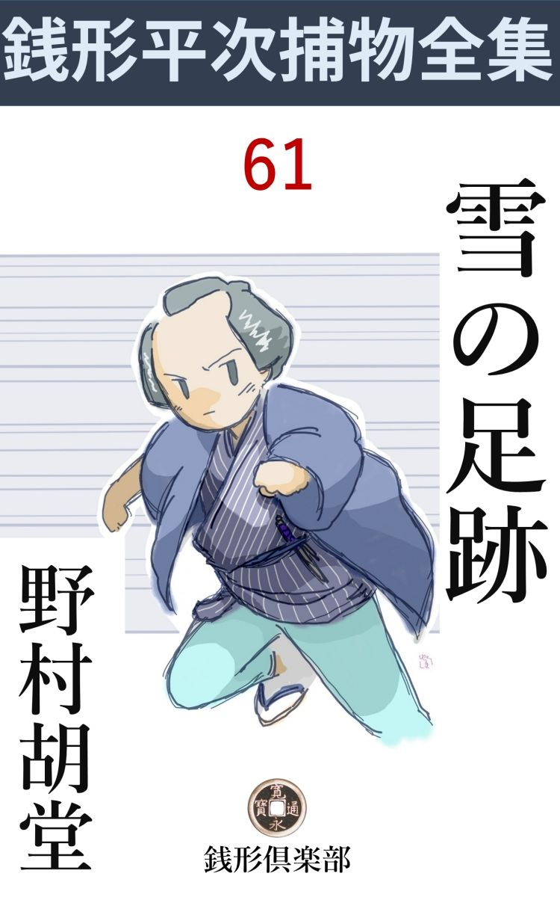
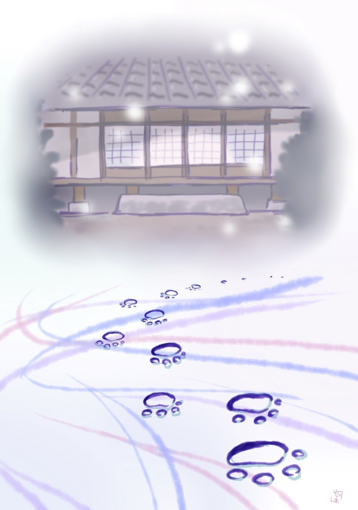

| 雪の足跡: 銭形平次捕物全集第61話 (銭形倶楽部) | |
| 野村胡堂 | |
| ZENIGATA CLUB (2018) | |

一
「親分、犬が女を殺すでしょうか」
淡雪 の降った朝、八五郎のガラッ八は、ぼんやりした顔で、銭形平次のところへやって来ました。
「咬 み殺されたのかい」
「そんな事なら不思議はないが、女が匕首 で刺されて死んでいるのに、雪の中の足跡は犬なんだそうで------」
「そんな馬鹿な事があるものか。犬が匕首を振り廻すなら、猫は出刃庖丁を持出すぜ」
「ね、誰だって一応はそう思うでしょう」
「一応も二応もあるものか。一体、どこでそんな騒ぎが持ち上がったんだ」
「行って見ましょうか、親分。犬が匕首をふり廻すような御時世じゃ、うっかり江戸の町は歩けねえ」
「よし、案内しろ。どこだ」
平次はもう身支度をしておりました。変った獲物に誘われる猟犬の本能のようなものを持っているのでしょう。型破りの事件があると、じっとしておられない平次だったのです。
「根岸で」
「三輪 の万七兄哥 の縄張じゃないか」
「へ、へッ、まア、そんなもので------」
「馬鹿野郎。俺をぺてんにかけておびき出す気だろう」
「飛んでもない、親分。それほどの悪気があるものですか、------でも、こうでも言わなきゃ、親分が神 輿 をあげちゃ下さらないでしょう」
「------」
「三輪の親分は、番毎こっちの縄張荒しをするのに、親分は浅草から上野一円と聴くと、どう口説いても手を出さないじゃありませんか」
「------」
「偶 には三輪の親分の鼻も明かしてやって下さいよ、親分」
ガラッ八はそんな大それた事を考えていたのでしょう。が、平次は捕物競争などに乗出そうともしません。
「宜い加減にしろ馬鹿野郎。三輪の兄哥は三輪の兄哥、俺は俺だ」
「人柄が違い過ぎる------って世間でも言いますよ」
「止さないか、馬鹿野郎」
「へッ、へッ、へッ、何の因果 か、その馬鹿野郎ッ------があっし の大好物で、親分にそうやられると、胸がスーッとしますよ。今朝はもう三服盛って貰ったわけで」
ガラッ八の八五郎は、それほど平次に心服しているのでした。
「呆れて物が言えねえ。俺の小言を葛 根 湯 と間違えてやがる」
「でもね、親分。------犬が女を殺した事だけは本当ですぜ。上根岸の寮で、元吉 原 でならした、薄 雲 花 魁 が害 られたんで」
独り言ともなく、聞えよがしに言うガラッ八の調子に、
「何だと八。溜屋 幸 七の手掛お咲が、殺されたとでも言うのか」
平次は思わず開き直りました。車坂の溜屋幸七は、平次とは手習仲間、大店 の若主人と岡っ引では、身分が違い過ぎますが、今でも盆暮の挨拶位は欠かしたことのない仲だったのです。
「へッ、そのお咲というのは平家名 で」
「何だと？」
「薄雲が源氏名 なら、元服してお咲は平家名じゃありませんか」
「無駄を言うな。------とにかく、溜屋の寮じゃ知らん顔もなるめえ。ちょいと行って見ようか、八」
「お出でなすった」
「何だと？」
「なアに、三輪の親分の顔が見てえと言う話で------」
「止さねえか、馬鹿野郎」
「へッ、これで葛根湯が四服目だ」
手の付けようがありません。
二
神田から上根岸まで行くうちに、春の淡雪は大方解けて、足駄のめり込むような凄まじい泥濘になりました。
溜屋の寮へ着いたのは、かれこれ巳 刻 半 ------やがて午 刻 近い刻限で、塀の下、藪の蔭などに、昨夜の名残りの雪を、ほんの申訳ほど残している有様でした。
「お、銭形の親分、ちょうど宜いところへ------」
主人の幸七は奥から飛んで来ました。三輪の万七に散々油を絞られているところへ、寺子屋友達の平次がやって来たのは、地獄で仏の心持だったでしょう。
小柄の三十前後、大店 の若主人らしい、渋 好 みの身扮 から、浅黒い引締った顔など、いかにも世馴れ、遊び馴れた心持の男前です。
「飛んだ災難だったね、溜屋 」
「三輪の親分は、犬が人を殺す筈はないから、家にいた者に違いない。家にいた者というと、下女のお金と、ゆうべ私の供をして来た小僧の角太郎と、夜更けになってから店の用事を持って来て、雪がひどくなって、ここへ泊った番頭の徳兵衛の外にはない------とこう言うんだ。下女や小僧や番頭はお咲を殺す筈はない」
「成程」
「ところが、俺 は毛頭覚えはない------親分も知っての通り、お咲は大金を出して身 請 をしたばかり、どんな無算当な人間でも、それを殺して、自分も処 刑 台 に上る気持になれるものじゃない------」
主人幸七が説明する迄もなく、去年の暮、三百両も積んで、お咲の薄雲を引かせ、ここに手頃な寮まで建てて囲った始末は、当時本妻のお定が大 嫉 妬 で、出るの引くのと言う騒ぎを起したことがあっただけに、銭形の平次にも、忘れようのない記憶だったのです。
「銭形の、------幸七の言うのは尤も至極に聞えるが、近頃お咲に他 の男が出来たという噂は、神田までは響いちゃいまいネ」
三輪の万七は、隣の部屋から皮肉なことを言っております。
「そんな筈はありません、お咲に限って------」
幸七は頸に喰い込む縄を外すように、神経質に襟をくつろげました。
「勤めをした女だ、そんな事が判るものか。------それを亭主のお前が知らなかった筈もない」
三輪の万七は鼻であしらいます。お咲に男のあったのを、幸七が知っていたか、知らなかったか、そんな微妙な関係が、今となっては重要性を帯びて来ているのでしょう。
「三輪の兄哥 、飛んだ出しゃ張るようだが、幸七とは餓 鬼 のうちから懇 意 な仲だから、悪く思わないでくれ。決して兄哥の仕事を邪魔する積りじゃないから」
平次は素直に打ち明けて、自分の立場を諒解して貰う積りでしょう。
「そいつは知らなかったが、------宜いとも、外に下手人がありよう筈はないから、気の済むまで見て行ってくれ」
三輪の万七は、もう幸七を縛るに決めている様子です。
「それじゃ------」
平次は幸七に案内させて、奥へ入りました。続いてガラッ八の八五郎。これは満 腔 の敵意を、反っくり返った鼻と、山の如く聳 えた肩に見せて、万七の空嘯 く前を通ります。
縁側へ顔を出した平次------。
「あ、これはひどい」
さすがに顔を反 けました。便所寄りの戸袋の傍、一枚開けた雨戸の中には、碧 血 に染んだお咲の薄雲が、虚 空 を掴んだ形で死んでいるのです。
寝巻の上に引っかけたらしい袢 纏 や、血に濡れた素足などを見ると、暁方小用に起きて、ここで不意にやられたものでしょう。傷は左乳の上を、前方から一と突き、凄まじい血の様子では、すぐ刃物を引っこ抜いて、どこかへ隠したのでしょう。
「刃物は？」
平次はすぐそれに気がつきました。
「どこを捜してもない、------刃物がありゃ下手人は挙がったも同様さ」
三輪の万七も後から顔を出します。
「------」
平次は黙って死骸を起し、顎で指図をして八五郎に後ろから抱かせました。曽ては吉 原 で鳴らした太夫だけに、『死の手』も美しさを奪うことは出来なかったでしょう。心臓の一と突きに、全身の血を大方失って、蠟 のように蒼白くなった顔は、何となく浄化された人間という感じです。
「下から突き上げた傷だ。------女の胸を下から突き上げるのは、子供か、一寸法師か------」
「犬だろうよ」
三輪の万七はニヤリニヤリと笑います。
三
このお咲殺しの一番不思議な点は、殺した刃物が紛失しているくせに、外から絶対に下手人の入った様子のない事でした。
下総から三月前に来たばかりという、下女のお金は、
「起きたのは寅刻 半少し過ぎ。まだ薄暗い時分でしたが、雪はもう止んでいました。お竈 の下を焚きつけておいて、門口の雪を掃 きましたが、------いえ、雪はほんの一寸ばかり、掃かなくたって宜い位でしたが、御近所の手前もあり、旦那がやかましいから箒目を入れておいたんです」
思いの外達弁にこう語り進みます。二十二三の出戻りだという醜い女。給金をがっちり溜め込むより外には望 がありそうもない人柄です。
「人間の足跡はなかったんだね」
と平次。
「表にも、裏にも、人間の足跡なんかありゃしません」
「雪は宵から降った筈だ」
それ見ろと言った調子は三輪の万七です。
「番頭さんが泊ることにしたのは亥刻 （十時）少し過ぎで、それから夜中まで降りましたが、私が丑 刻 （二時）前に小用に起きた時は、便所の窓から見ても、もう小止みになっていましたよ」
お金は確り者らしく、思いの外語意が届きます。
「犬がどうかしたというのは、いったい何の話なんだ」
平次は最初の疑問に返りました。ガラッ八の報告にも、万七のイヤがらせにも、犬の話が付き纏っております。
「裏口には、犬の足跡がありましたよ。向うの往来から入って来て、何か食物を漁 って帰ったんでしょう」
「その犬が人を殺したというのか」
平次もツイそんな事を言う気になったのです。
「でも、犬の足跡に少し血のようなものが滲 んでいましたよ」
「フム」
平次はいっぺんに茶かし気分を封じられてしまいました。犬の足跡に血がついているとなると、これは考え方を立て直さなければなりません。

「それにしちゃ、縁側とお勝手は離れ過ぎていないかな」
と平次。
「軒の下をグルリと廻れば、足跡は残らないよ」
三輪の万七も、犬の足跡には一脈の疑いを持っている様子です。
「雪が消えても、庭があの通り霜解けでひどくなっているから、犬の足跡位残りそうなものじゃないか」
平次は裏口から出て一応その辺を見廻しました。
「庭じゃありませんよ。犬は砂利 や炭俵を敷いた、お勝手口の道へ入って来たんです」
とお金。
「大層行儀の良い犬だね」
平次はそう言いながら、側に引っついている八五郎に眼くばせしました。犬の足跡のあったあたりを、往来へ出て見ろという謎でしょう。
「銭形の、------下手人は犬の背に乗って逃出したとでも思っているのかい」
三輪の万七は又イヤ味を言います。
「いや、人間を背負って逃げる犬はないだろうが、よく馴らした犬なら、血の着いた刃物くらいはどこかへ持って行ってくれるよ」
「------」
平次は本当にそんな事を考えているのでしょうか。犬が兇器を持って逃げると言った、そんな都合の好いことが本当にあるものでしょうか。
「雨戸の締りは忘れるような事はあるまいね」
平次は重ねてお金に訊ねました。
「そんな事はありません。私が締めた上、御新造さんが一々見廻りますから」
「外からコジ開けた様子のないところを見ると、お咲が自分で開けたんじゃないかな」
「そうかも知れませんよ。雪の降るのを、宵から大変気にしていた様子ですから、小用に起きた序 に空模様でも見たんでしょう」
お金は何んのこだわりもありません。とにかく、雨戸は一枚開いたままだったとすると、お咲が開けて外の下手人を呼込んだか、家の者がお咲を殺して、刃物を隠した上、下手人が外から来たように見せかけるために、雨戸を開けたか、------でなければならないわけです。
「何方 にしても、正面から匕首で胸を突かれたくらいだから、下手人はよく知ってる者に違いない」
三輪の万七の言う結論は、今のところ間違いのないことでしょう。
四
主人の幸七は夜中から先は何にも知らず、小僧の角太郎は寝間が遠い上に大寝坊、泊り合せた番頭の徳兵衛は、
「御新造様が、二本つけて下すったんで、すっかり好い心持に寝込んでしまいました。今朝の騒ぎを聴いて飛起きる迄、何にも存じません。へエ」
少し光って来た、四十男の前額を撫で上げます。
「二合は御馳走過ぎるね」
平次はそんな事まで気を配りました。
「へエ、御新造様は、すすめ上手で、へエ」
元が元だから------と言いたそうなのを、平次は見て取らずにいません。
不意に泊り込んだ奉公人に、二本の酒を振舞うのは、お妾気質 の大気がさせるにしても、少し御馳走が過ぎます。
その晩お咲は、何か企 らむ気でもあったのでしょうか、平次は万七と顔を見合せました。その時、
「外は往来だ。江戸中は愚 か、京までも長崎までも続きますぜ。親分」
ガラッ八はそんな事を言いながら帰って来たのです。
「長崎から人殺しが来るかよ。馬鹿野郎」
「へエ------」
「近所にどんな家がある」
「裏の方は荒物屋に酒屋に、畳屋、それからしもたやが二三軒、寮が二つ三つ」
「表は？」
「匕首 を背負った犬は表なんかへ逃げはしなかったでしょう」
「犬が匕首なんか背負って逃げるものか。先刻から考えていたんだが、匕首はその沓 脱 の後ろに、打ち込んであるよ」
「へエ------」
ガラッ八はいきなり縁と沓脱の御影石 の間に首を突っ込みました。
「あるだろう」
「あったッ------親分は見透しだね。沓脱の後ろを引っ掻くと、柔らかい土の中へ柄先を一寸も打ち込んでありましたよ。こいつは鍬 で掘出すより外に手の付けようがねえ」
ガラッ八は裏へ廻って物置から鍬を持出すと、沓脱の石を退けて、柔かい土を掘りにかかりました。
「匕首を土の中に打ち込んだ石を、沓脱の傍へ放って行くなんか、あんまり良い知恵じゃないよ------ここ掘れワンワンをしているようなものさ」
平次は事もなげですが、三輪の万七は半日探してこれが見つからなかったのです。
「尤も、沓脱の下から刃物が出たんだから、下手人は犬でない事も確かさ」
万七はそう言いながら、主人の幸七の縮 み上った顔を見やります。
ガラッ八が掘り出した刃物は、夜店物の匕首で、その頃はどこにでも一本や二本は転がっていそうな品。血と泥とに塗れている外には、何の変哲もありません。
ちょうどその時、
「飛んだことでございます。------御新造様がお気の毒なことで------何か御用があったら、仰しゃって下さい。役には立ちませんが------」
お勝手口へ顔を出したのは、二十七八の一寸 した男。幸七の萎 れた姿へ声を掛けます。
「重吉さんか、------わざわざ有難う、親方へ宜しく言って下さい」
幸七は最初の見舞客へ、嬉しそうに答えました。
「あれは？」
三輪の万七は、どんな事でも逃すまじき顔色です。
「表の植木屋の伜で、------重吉と言いますよ」
その問答を他所 に、平次はもう裏口で重吉と親しそうに話し合っておりました。
「昨夜この辺に何か立廻らなかったろうか」
「へエ------、何か来たかもわかりませんが、何分あの雪で、宵寝をしてしまいましたんで」
重吉は少し迷惑そうです。
「殺されたお咲さんは、近所の評判はどうだったえ------」
「旦那に聞えちゃ悪う御座いますが、美しい女ほど近所の評判は悪う御座いますよ」
「成程ね」
「それに商売人上りで」
「お前さんは、お咲さんの昔のことを知っているのかい」
「若い男で薄雲 を知らない者はありゃしません」
入山形 に二つ星の太夫------それも吉原には少ない数ではないでしょうが、薄雲の評判は、妙に江戸の若い男を焦 立 たせた時代があったのです。
「話は少し異 うが------この辺に犬はいないだろうか」
と平次。
「用心のよくないところですから、三軒に一匹の割で犬を飼っていますよ」
「今朝、血だらけの犬を見なかったかい」
「それは知りませんが------」
平次の手繰った糸は、ここでプツリと断たれました。
三輪の万七が、今にも主人の幸七を縛りたそうにするのを、平次はようやくなだめて帰した後、とにもかくにも、ガラッ八をつれて、車坂の溜屋の本店へ行って見ることにしました。
下谷指折りの呉服屋。上野の御用を勤めて代々栄えておりますが、家付の女房お定は、根岸の寮の騒ぎを聴くと、朝から血の道を起して、奥で寝ているという嫉 妬 振 り。店にいる番頭手代達も、唯おろおろして、商売も身につかない様子です。
一応諮 ねて見ましたが、店の大戸を閉めたのは戌刻 （八時）それから誰も出なかったという言葉に間違いがあろうと思われません。人数は多いようでも、一定の仕事と組織があるので、大番頭や奥の者でなければ、容易に夜分などは脱出せないようになっているのでした。
大番頭の徳兵衛は根岸に泊ったのですから、あとは、女房のお定が疑えば疑える唯一の人間です。しかし、車坂から上根岸まで、雪の中を飛んで行って、足跡をつけずに、寮へ忍び込めるとは想像もつきません。
「女の手並じゃないな、八」
独り言ともなく言う平次。
「軽業師 なら何うです、親分。向うの家から綱を渡して、その綱を渡って忍び込めば、雪の上へ足跡が付かないわけで------」
ガラッ八は奇想天外なことを言い出しました。
「その綱を誰が掛けたんだ」
「へエ------」
「後で外したのは誰だ」
「なあ------る」
どうも他愛がありません。
「そんな馬鹿な事を考えるより、ちょっと吉原へ行ってくれ」
「お安い御用で」
「何がお安い御用だ。------下手に十手なんか突っ張らせて行くと、物笑いになるよ」
「吉原へ行って何をやらかしゃ宜いんで？」
「薄雲の客を洗って来るんだ。去年の秋まで勤めをしていたんだから、すぐ解るよ」
「へエ------」
「深間でも馴染 でも、------とにかく、フリの客でないのをみんな訊き出して来るが宜い」
「へエ------」
ガラッ八は襟を直しました。行く先が吉原となると、独り者のガラッ八は、商売気を離れて改まった心持になるのでしょう。
五
銭形平次、これほど見事に背負投を喰ったことはありません。三輪の万七の望み通り、主人の幸七を縛っておけば何事もなかったわけですが、うっかり邪魔をして、幸七をお通夜の席へ連ねておいたばかりに、取り返しのつかぬ大 失 策 をしてしまったのです。
簡単に言えば、溜屋の主人幸七は、上根岸の寮の庭先で、何者とも知れぬ曲者のために、締め殺されているのを、翌る日の朝、これも同じ下女のお金が見つけたのでした。
幸七は小柄な華奢な男で、庭先で後ろから締められたら、大した抵抗も出来なかったでしょう。締めた手拭は、寮の手洗場にあった品で、何の手掛りにもならず、その晩は自 棄 に寒かったので、庭はカチカチに凍って、足跡一つ残してはいません。
急を聴いて、平次も万七も駆けつけました。平次の縮 尻 も小さくはありませんが、幸七をお咲殺しの下手人と思い込んでいた、三輪の万七もあまり大きな顔は出来ません。
「主人の外へ出たのを知ってる者はないか」
再三再四、同じことをくり返して訊くと、
「番頭さんが------」
下女のお金は、恐る恐るこう言うのです。
番頭の徳兵衛はすぐ平次と万七の前に引出されました。
「昨夜主人と庭へ出たそうじゃないか」
万七の顔には仮借 がありません。
「出ました。が、それは宵のうちで」
徳兵衛は真っ蒼になりました。
「どんな事をしたんだ」
「人の耳に入れたくない用事でございました」
「それを聴かして貰おうじゃないか」
万七は開き直ります。
「こうなれば、みんな申上げます。------実は主人は溜屋の養子で、------車坂本店の御新造様が、まだ月々の帳面を御覧になりますが、去年の暮から、身請やら、普 請 やらの出費で、千両近い穴があいております。それを晦日 が明日に迫っては、私の勘考でどうにもなりません。お通夜の席から、そっと主人を呼出して、お相談申上げたのはそのためでございます」
「フーム」
そう聴くと、何の疑いもなくなります。
「が、宵に一度庭へ出た位なら夜中にも出ないとは限るまい」
万七の問の拙 さ。
「飛んでもない。親分さん」
「昨夜の通夜は、誰々だい」
「主人と私と、手代の茂助と、小僧の角太郎と、それに御新造の御知合の方が二人、下女のお金はお勝手におりました」
「お咲の知合いの方というのは？」
「吉原の方で------尤もこれは宵のうちに帰りました。泊ったのは店の者ばかりで------へエ」
「昼のうち、主人に変ったことはなかったのかい」
これは平次です。
「咲を殺した下手人が判るかも知れない------と、ソワソワしておりましたが」
「------」
これだけでは何が何やら判りませんが、とにかく、何か用事があって庭へ出た主人が、不意に後ろから襲われて殺されたことだけは確かでしょう。
一人一人当って見ましたが、手代の茂助も、下女のお金も、小僧の角太郎までも、知らぬ存ぜぬの一点張で、完全な不 在 証 明 を持っている者は一人もありません。
平次は欝陶しい心持で、車坂の溜屋に向いました。が、ここにも、脱出す機会を持っている者は二人や三人はありますが、主人幸七を殺すほどの動機を持った者はありません。たった一人女房のお定は、一番疑われる地位にいるわけですが、昨日から半病人の姿で、万七や平次が役目柄で逢っても、ろくに口もきかず、そっぽを向いて泣いてばかりおります。
三十二三の念入に醜 い女で、少し病的な物の言い方や、丈夫そうな体格などを見ると、夜陰にそっと脱け出して、上根岸まで行って来ないと保証は出来ません。
「だが------」
平次は言いました。
「主人を殺したのは、お咲を殺したのと同じ人間------雪の上に足 跡 を残さない人間だ。------多分下手人を知っているからと言って、庭へ主人をおびき出して殺したのだろう。溜屋の内儀ではないな」
こんな事を言います。
「親分、薄雲の客を書き上げて来ましたよ」
ガラッ八の八五郎が、一晩経ってから、ノソリと帰って来ました。
「馬鹿野郎、それ位の事をするのに、一と晩かかる奴があるものか」
「へッ、------勘弁して下さい。親分」
「けころ へでも引っ掛ったんだろう、呆 れた野郎だ。------昨夜のうちにこの調べが手に入れば、溜屋の主人を助けられたかも知れない」
「------」
ガラッ八はまさに一言もありません。
小言を言いながらも小菊に書いた蚯蚓 流の調べ書を読むと、
でんまちょう さへえ
こうとくじ前 でん助
あさのさまるすい こんどうさえ門
くるまざか たまりやこう七
おなじく もすけ
ほんじょ いしはらさく内
ねぎし じゅう吉
と読めるのです。
「車坂の溜屋幸七は解るが、もすけというのは誰だ？」
「溜屋の手代ですよ。親分」
「それから、ねぎしのじゅう吉というのは？」
「寮の前の植木屋の伜で」
「これは良いものが手に入った。------それから、幸七の浮 気 筋 を一つ残さず調べてくれ。あれほど遊び好きの男だから、岡場所や、芸妓にも、引っ掛りがあるだろう」
「へエ------」
「今度は泊って来ちゃならねえよ」
「もう大丈夫で、------懐中には百もありませんよ、親分」
「呆れた野郎だ」
平次は苦笑いをして見送ります。
六
三輪の万七は、とうとう番頭の徳兵衛を挙げました。その晩主人を庭におびき出した上、かなりの費い込みがあったことが、解ったのです。
「主人の幸七が費ったという千両の穴 だって、解ったものじゃない。徳兵衛に言わせると、薄雲の身請は引け祝とも五百両はかかっていると言うから、実地に当って聴いてみると、三百両でみんな済んだそうで、主人が死んだとなると、それだけもう細工をする野郎だ」
万七がそう言うのも一理ありました。
「だが、待ってくれ。それにしちゃ、あの番頭は、あんまり自分に不為めな証拠をこしらえ過ぎた。------それに、犬の足跡に血のついていたのは、どう片付けるんだ」
平次には腑 に落ちない事ばかりです。
「野良犬が血の匂いを嗅いで来て、縁側の戸が開いていたんで、死骸の側まで来たんだろう」
「------」
それも考えられない事はありませんが、匕首 を土の中へ打ち込んだ石を、沓 脱 の側に転がしておいたのはどうしたわけでしょう。
「銭形の兄哥、他に下手人の当りでもあると言うのかい」
万七は勝誇 った中にも一脈の不安があります。
「それが解らないから困っているんだ。薄雲の馴染客の中には、手代の茂助や、植木屋の伜の重吉の名もあることだし」
「それにしても、人二人殺すのは容易じゃねえ。薄雲の客の仕業にしちゃ、大 袈 裟 だぜ」
「とにかく、もういちど当ってみることだ」
平次は手代の茂助を呼出して、もう一度昨夜の事を訊いてみました。が、半通夜で疲れていたので、子 刻 （十二時）過ぎは何にも知らないと言うだけ、薄雲との関係を訊かれると、
「それ丈は勘弁して下さい。主人に知れると、たとえ以前は勤めの身でも、あんまり好いお心持はなさるまいと、一生懸命秘し隠しに隠した上、御新造にも、おくびにも出さないように頼んで置きました。そんな事で疑われちゃ、間尺 に合いません」
泣き出さぬばかりです。
お勝手の方を手伝っている、植木屋の伜重吉を呼び出すと、
「そんな事まで判りましたか、面目次第もありませんが、薄雲とはもう一年も前に手を切ったあっし で、今じゃ御出入先の囲 われ者ですから、逢っても顔を見ないようにしていましたよ。------でもあの通り綺麗でしょう。妙に昔の事が想い出されて、擽っ たくて困りました。へッ、へッ、お察し下さい、親分さん」
こんな事をツケツケと言うのです。
「昨夜はどこへ行っていたんだ」
「あっし ですかえ？」
「------」
平次はうなずいて見せました。
「申し悪 いところで、へエ」
「どこだい」
「新 情 婦 のところですよ。へッ、へッ」
重吉は無暗に頭を掻いております。
「気の毒だが、それを訊きたいよ」
平次は無反響な顔をして見せました。
「申しますよ。首とつり替じゃ仕方がありません。------でも、黙っていて下さい。これが知れると、町内の若い者に袋叩きにされ兼ねません」
「------」
「言いますよ、言いますとも。弱ったね、どうも、その、実は、坂本町のお栄のところで、へッ、へッ、小唄の師匠ですよ」
「宵から入り込んでいたのか」
「飛んでもない。子刻 の鐘を聴いて、それを合図に裏口から入れて貰って、朝の卯 刻 の鐘を合図にそっと脱け出す寸法なんで、へッ」
「嫌な笑いようだな」
「相済みません。へエ、人殺しの引合いに出されるんでなきゃ、滅多には言えない事で」
手の付けようがありません。
平次は宜い加減にして切り上げると、その場からすぐ坂本町へ飛んで行きました。小唄の師匠のお栄というのは、二十五六の下谷中で騒がれている年増で、平次の峻烈 な問 にも、最初は容易に応えませんでしたが、半刻あまりの根比べで、とうとう兜 を脱いでしまいます。
「人気家業ですから、どうぞ、親分。此処かぎりでお聞流しを願いますよ」
「それは心得ているよ。昨夜、誰が一体ここへ泊ったんだ。それを言って貰えば宜い」
平次は膝を乗出しました。
「実は------。上根岸の植木屋の重吉さんですよ。半歳前から、人目を忍んでおります」
「時刻は？」
「子刻 の鐘を合図に来て、卯刻 には帰ります」
平次は唸っております。念のため婆やさんに聴くと、これは少し耳は遠いながら、恐ろしく感の良いのが自慢で、お栄の言葉を、はっきり裏書きします。
「植木屋の重吉さんは、三日にあげず忍んで来ますよ。昨夜も来ましたとも。子刻 の鐘といっしょでしたよ。私はお酒の支度をすると、すぐ引込むことにしているんです------当てられて敵 いませんからねえ。ホッ、ホッ、ホッ」
平次は恐れをなして、引さがったことは言うまでもありません。
「やはり手代の茂助かな、それとも？」
女房のお定か、下女のお金か------醜 い女の嫉妬が、どんな恐ろしい事を仕出かすか、平次はあまりにもいろいろの例を知っております。
「親分」
「あッ、びっくりするじゃないか、八」
ガラッ八は往来で待っていたのでした。
「今度は早かったでしょう」
「なんだ」
「あッ、忘れちゃ情けない。------溜屋の主人の粋 事筋、半日がかりでみんな手 繰 りましたぜ」
「どれどれ、その蚯蚓 ののたくったのを見せてくれ。お前の書いた字を読むと、大概の癲 癇 が治る」
平次は無駄を言いながら、ガラッ八の調べ書を取上げました。
やぐら下 おぎん
ゆしま おこま
くるまざか さのやのむすめ
さかもと おえい
よし丁 若きち
「面白いな、ガラッ八」
「これが夫婦約束をしたのだけですぜ。稼ぐもんでしょう」
とガラッ八。
「おえい------というのは坂本の小唄の師匠だろう」
「え、あの凄い年増で、一しきり、溜屋の主人に熱くなっていたそうですが、近頃は河岸を変えたそうで」
「こりゃ、もういちど考え直さなきゃなるまい」
「下手人は女ですか。親分」
「まだ判らないよ。------もう一度雪が降らなきゃ」
平次は、薄曇りの早春の空を仰ぎました。
七
その晩は誂 えたように雪、これが今年の名残でしょう。朝までに降り止んで、二寸位は積りました。
薄暗いうちに飛起きた平次は、前の晩から泊り込んでいたガラッ八に、何か言い含めると、自分は、三輪の万七を誘って上根岸の寮へ向います。
「何があるんだ、銭形の。俺はお上の御用こそ勤めているが、朝起きとぬるい 茶は大嫌いだよ」
そんな事を言う万七を追い立てるように、寮へ着いたのはやがて卯 刻 半 （七時）頃でした。
主人の死骸は車坂に移しましたが、こっちもお咲の葬式が済んだばかり、茂助とお金と角太郎が、うら淋しく留守を預かっております。
「まア、少し休んで、八の野郎が来るのを待とう。面白いものを持って来る筈だから」
平次は寮に着くと、急に落着き払って、お金のくんでくれる渋い茶などを啜 りました。
それから四半刻ばかり。
「親分、用意が出来ましたよ」
裏口から呼ぶのは、ガラッ八の声でした。
「さア、三輪の兄哥」
二人が揃って顔を出すと、この騒ぎですっかり生活をかき乱されたお金が、雪を払い忘れた裏口から往来まで真っ直ぐに二た筋、犬の足跡が------いつかの朝のように、まざまざと印されているではありませんか。
「あッ」
一緒に顔を出したお金は悲鳴をあげました。
「どうした、お金」
「また来ましたよ。御新造さんを殺したのが------」
真っ青な顔を振り向けると、ワナワナと顫 える指は、雪の上を走る二た筋の足跡を指しているのです。
「御新造が殺された朝の足跡も、この通りだったのか」
と平次。
「え、少しも違いません。今日は少し雪が深いだけで」
「庭へは入らずに、真っ直ぐに裏口から往来へ足跡がついていたんだろう」
「その通りですよ、親分。どうしましょう。私はもう、こんな家にはいられません」
お金のウロウロするのを、平次はようやく引止めました。
「もう少し我慢してくれ。八、今度はその犬だ」
「へエ------」
どこからつれて来たか、八五郎の腕には、小さい犬が一匹、クンクン鼻を鳴らして顫えているのです。
「親分、やりますよ」
「さア、やってくれ」
八五郎はそう言いながら、抱いていた小犬を雪の中に投り出すと、犬はすっかり脅 えていたものと見えて、道も垣も構わず、庭を斜 に突っ切って、先の足跡とは全く違った方へ、逃げ出してしまいました。
「こんな足跡ではないだろう、お金」
しばらく経って、平次は小犬の足跡の方を指さします。
「違いますよ。あの日の朝のは、こっちの足跡の通りでした」
お金の指したのは、前から道へ真っ直ぐに印されている方の足跡です。
「その足跡は一つ一つ互い違いについているが、犬の足跡は、前 肢 の跡を後肢が必ず踏んでいるぜ」
平次の説明に、三輪の万七も始めて気がついた様子です。そう言われて見ると、先の足跡は、犬ではありません。
「何だ。あの足跡は？」
と万七。
「竹馬だよ」
「えッ」
あまりの答に、万七も開いた口が塞がりません。
「犬はあんな細い道を二度も真っ直ぐに歩くものか」
平次の言う下から、ガラッ八、どこから持出したか竹馬を一挺 、いきなり飛乗るように雪の中へ歩き出します。
「竹馬に乗るのも十何年目だ。------下駄を穿 いた竹馬なんてのは、乗り悪 いネ」
見ると、竹馬の下には、犬の足のように彫った木の栓 まで付けてあるのです。
「すると？」
「下手人は外から竹馬で入って、何んかの合図でお咲を呼出した。お咲は昔馴染でもあり、さんざん脅かされているので、それを知らん顔をしてはいられなかった。尤もその晩は主人が来ているので、怖々雨戸をあけたところを、男は下から匕首 で突き上げ、お咲の死んだのを見すましてその匕首を、沓 脱 の裏に打ち込んで逃出したが、竹馬に血の付いたことは気がつかなかったろう」
平次はその場を見ていたように説き進めます。
「すると？」
三輪の万七。
「それだけで止す積りのを、刷毛 序 に金で女を手に入れた溜屋の主人も殺す気になった。尤もこれは幸七に捨てられた女に勧められた事だが------」
「------」
「お咲殺しの下手人を教えるから------と翌る晩そっと庭におびき出し、強力に任せて後ろから絞めた------余程の力だろう」
「すると？」
三輪の万七も次第に思い当ります。
「あの晩、誰も主人殺しでないという確かな証拠を持っていないのに、たった一人だけ、子 刻 から卯 刻 まで他所に居たという確かな証拠（現場不在証明 ）を持った人間がいる。------誰だって毎日毎日、何時は何処に、何時は何処にと、一々行先の判るような証拠を持っているものじゃない。こんな時は現場にいなかったという、確かな証拠を持っているものほど怪しいわけだ」
「------」
「雪の上は竹馬で渡れる。------現場にいないという証拠は、二人口を合せさえすれば、いくらでもこしらえられる」
「銭形の、俺にも段々判って来るような気がするが、すると下手人は------」
三輪の万七の言うのを引取って、
「あれだよ」
平次の指す木戸の蔭から、パッと飛出した人間。ガラッ八は猟犬のようにそれを追いました。
「野郎、待ちゃがれッ。御用だぞッ」
× ×
下手人はお咲が薄雲 時代の深間だった、植木屋の伜重吉。竹馬で乗込んで薄雲のお咲を殺した後、以前は幸七の情人 で、一時囲われたことのある小唄の師匠お栄と懇意になり、その滑らかな舌に焚きつけられて、刷毛序に恋敵の幸七も殺す気になったのでした。
現場不在証明は、お栄と重吉と念入に口を合せ、婆やは早く寝かして胡 麻 化 しましたが、それより先に、お咲を殺した翌る日、犯罪者に共通の誘 惑 に打ち負けて、ノコノコ現場の様子を見に来たのが、重吉が平次に疑われる原因だったのです。
「八、女出入りに気をつけろよ。金があって男が好いと、世間が物騒だぜ」
重吉とお栄の口書きまで取らせて、八丁堀の組屋敷からの帰り、銭形平次はこう言って八を振り返りました。
「へエ------」
その時の八五郎の顔というものはありません。薄雲馴染客調べで、ツイ脱線した八五郎は、当分頭が上がらないことでしょう。
（編注）
作品中には、身体の障害や人権にかかわる、差別的な語句や表現が見られますが、本書が成立した当時の時代背景等が現代とは異なる古典的な文学作品でもあり、著者が故人でもありますので、底本のままとしました。ご理解、ご諒承のほどをお願い申し上げます。
著者---野村胡堂
挿絵---萩 柚月 © 2017
初出---「オール讀物」昭和十二年三月号 文藝春秋社
底本---「錢形平次捕物全集」第三巻 河出書房 昭和三十一年六月十五日初版
編集・発行 銭形倶楽部